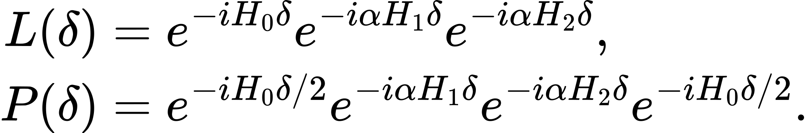
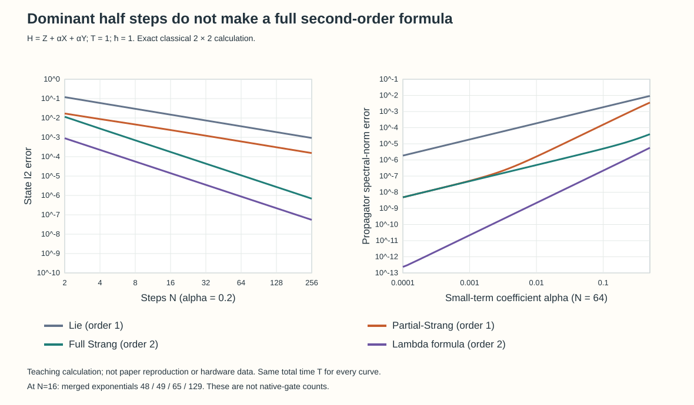
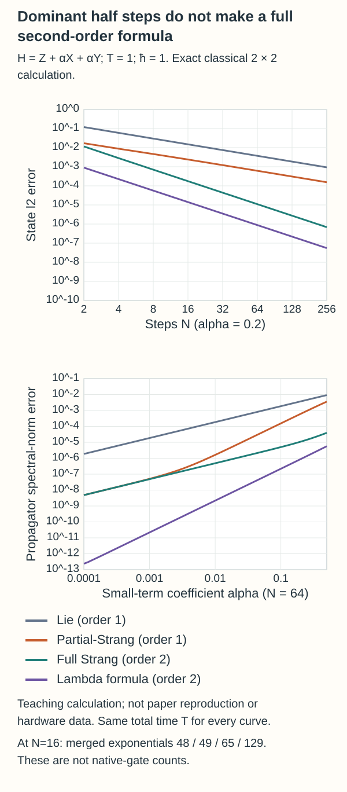
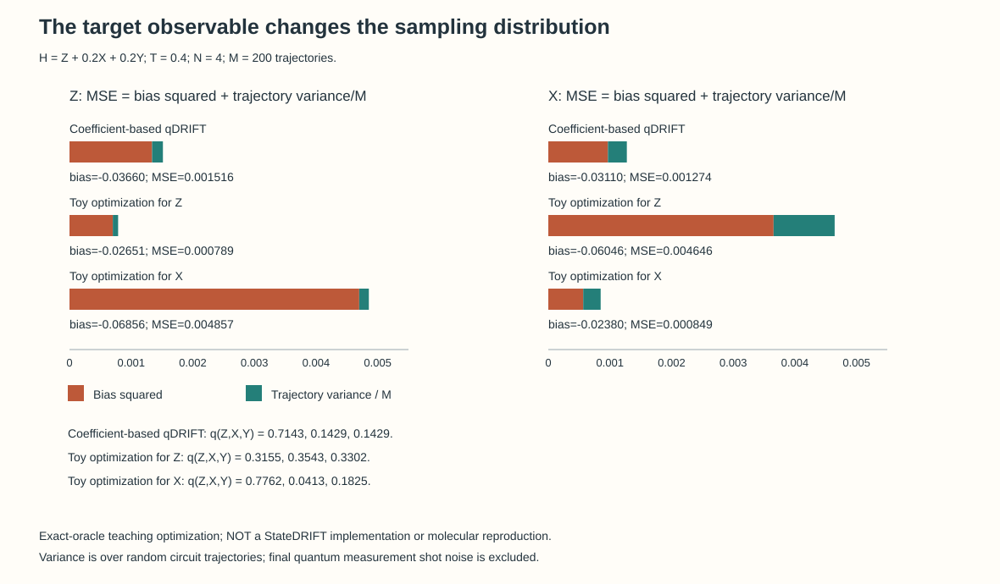
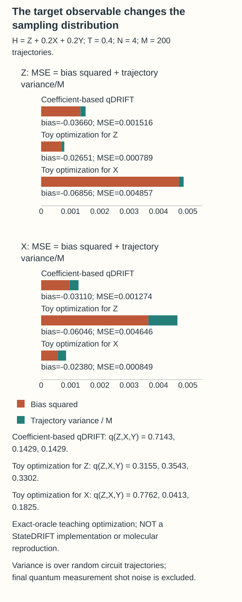
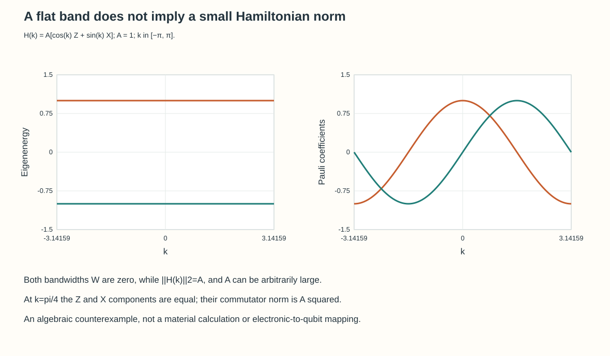
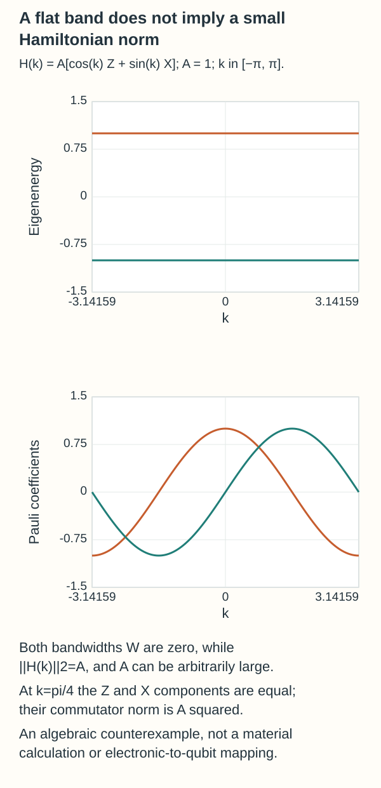

Quantum dynamics tailored to observables and Hamiltonian scales
For the same Hamiltonian, a useful approximation depends on the observable and the relative sizes of its terms. Exact teaching calculations distinguish what StateDRIFT and norm-aware product formulas change.
TECH REVIEW · 26 October 2026 · Quantum dynamics · Hamiltonian simulation · Computational science

Contents
- Three meanings of accurate time evolution
- Why place half of the large term at each end?
- Order and cost in an exact one-qubit calculation
- StateDRIFT changes the probability of executing a term
- Does a distribution that helps Z also help X?
- Questions that remain for practical calculations
- Flat bands do not automatically meet the algorithmic assumptions
- References and reproducible material
Calculations using the same Hamiltonian need not ask for the same answer. One task may require accurate time evolution for every initial state. Another may ask only how a particular occupation changes from one specified state. Imposing every requirement of the first task on the second can produce unnecessarily long circuits. Conversely, reusing an approximation tailored to one observable can reduce accuracy for another.
Two preprints released in October 2026—StateDRIFT and norm-aware product formulas—make this choice at different points. The former adjusts the probabilities of selecting random time-evolution terms using the initial state and target observable. The latter changes the deterministic product formula used to arrange large and small terms. Once the error each method addresses and the input it requires are specified, one can compare the operations needed to reach the same target accuracy. [1,2]
Three meanings of accurate time evolution
In energy calculations such as VQE, reading an expectation value from a prepared state and allocating repeated measurements are important problems. Here the object of interest is the approximation that constructs time evolution itself. Measuring an observable more often and applying a Hamiltonian-term rotation more often are different design choices.
Set ħ=1 and write the exact propagator of H as U(T)=exp(−iHT). To control all input states, one can examine the propagator error ||U−Ũ||. For a specified initial state |ψ₀⟩, one can instead examine the distance between the two output states. If the physical observable O is also specified, the target is the expectation value

An accurate propagator gives a bound on observable error. The reverse inference does not follow: one accurately predicted observable does not establish accuracy for every state and observable. Moreover, averaging the outputs of random circuits generally produces a mixed state. Its error cannot simply be treated as the error of a single approximate unitary.
Why place half of the large term at each end?
Consider H=H₀+α(H₁+H₂), with the three H terms having comparable norms and |α| small. A step has duration δ=T/N. Compare the elementary Lie product with a Partial–Strang product that places the dominant term at both ends:

These are matrix products in the written order; the rightmost factor acts on a state first. P treats H₀ symmetrically, but the middle H₁ and H₂ factors do not return in reverse order. It is therefore generally a first-order formula, distinct from a fully symmetric, second-order Strang formula.
The arrangement aims to suppress a leading contribution from the noncommutation of large and small terms. Stopping the local-error discussion at α²δ², however, loses an important condition. With constants C₁ and C₂ depending on the fixed terms and norms, the two relevant contributions can be read as

Taking shorter steps at fixed α differs from reducing α at fixed step size. In the latter limit, the residual linear in α can dominate. Appendix B of the source paper distinguishes this crossover. Identifying which contribution limits the target precision is more useful for choosing a calculation than assuming that small terms always give an α² improvement. [2]
The reported 4.5–8-fold improvement across five molecules is a reduction in mean state-propagation ℓ2 error, using the STO-3G basis, T=1 au, N=100, and ten Hartree–Fock initial states subjected to orbital rotations. Implementing the extra dominant-term placement also has a cost that must be evaluated in orbital rotations and native gates. An operator-norm guarantee, a numerical error for specified states, and device execution time are different metrics.
Order and cost in an exact one-qubit calculation
An independent teaching calculation uses NumPy 2.0.2 for H=Z+0.2X+0.2Y at T=1. [3] The initial state is cos(1.05/2)|0⟩+exp(0.38i)sin(1.05/2)|1⟩. Exact 2×2 matrices expose the behavior of a noncommuting sum; this is distinct from reproducing either paper's molecular benchmarks. The λ formula in the table is the second-order construction in Equation (22) of the norm-aware paper. It uses λ=1/2−√3/6 to suppress a leading contribution linear in α from the coupling between large and small terms. [2]
| Formula | State ℓ2 error at N=16 | Exponentials after merging adjacent identical terms |
|---|---|---|
| First-order Lie | 0.01485170 | 48 |
| First-order Partial–Strang | 0.00238632 | 49 |
| Fully symmetric second-order Strang | 0.00017549 | 65 |
| Paper's optimized-λ second-order formula | 0.00001408 | 129 |


The log–log slopes over N=32–256 are approximately −1 for Lie and Partial–Strang, and −2 for the two second-order formulas. Calling P second order merely because H₀ appears as two half steps would fail to explain this result. Greater accuracy at the same N can require more exponentials, so practical selection requires a cost comparison at the same target error. In this one-qubit example, the state distance happens to equal the operator 2-norm error; that equality is not a general property of the two metrics.
StateDRIFT changes the probability of executing a term
Write H=ΣⱼcⱼPⱼ, where Pⱼ is a Pauli string and cⱼ its coefficient. Standard qDRIFT samples terms with qⱼ∝|cⱼ|. A selected term applies exp(−icⱼδPⱼ/qⱼ), so changing its probability also requires changing its rotation angle. StateDRIFT adjusts this distribution using response and commutator information about the initial state and target observable. [1]
This changes neither just the measurement basis nor just the number of shots assigned to an otherwise fixed final circuit. It changes the ensemble of random circuits generated at finite depth. A term that appears unimportant in the initial state may matter later, so the paper mixes in a coefficient-based distribution to prevent probabilities from disappearing without control.
Suppose M independent random circuits are drawn and each circuit's expectation value is known exactly. The mean squared error (MSE) of their average splits into bias²+V/M. Bias is the difference between the exact-evolution expectation and the ensemble mean; V is the variance of the expectation values across circuit draws. A device introduces additional quantum measurement shot noise within each circuit. The M used below counts circuit trajectories, not these final measurement shots.
Does a distribution that helps Z also help X?
Keep the same H and initial state, and fix T=0.4, N=4 and M=200. The distribution search here is an educational oracle search: it knows the exact complete dynamics when evaluating MSE. It does not implement StateDRIFT's allocator based on low-order commutator information and a truncated bias expansion, and it makes no claim of global optimality. With that boundary, the example can test what observable-specific design means.
| Sampling distribution q(Z,X,Y) | MSE of the Z expectation | MSE of the X expectation |
|---|---|---|
| Coefficient-based (0.714286, 0.142857, 0.142857) | 0.00151577 | 0.00127419 |
| Z-targeted search (0.315497, 0.354291, 0.330211) | 0.00078901 | 0.00464612 |
| X-targeted search (0.776217, 0.041251, 0.182531) | 0.00485711 | 0.00084950 |


The Z-targeted distribution reduces Z's MSE while increasing X's. Targeting X produces the opposite tradeoff. Reusing a calculation tailored to one observable as a common result for several observables therefore requires reassessment. The example shows both why observable-specific distributions can differ from a coefficient-based choice and where the benefit of tailoring ends.
The mean was not calculated by taking powers of the matrix ΣqⱼUⱼ. Instead, the density-matrix channel 𝓔(ρ)=ΣqⱼUⱼρUⱼ† was iterated, and a channel for two copies sharing the same circuit choices supplied the second moment. Independent recalculation using SO(3) rotations of Bloch vectors and first- and second-moment matrices agreed to within 1.06×10⁻¹⁵. Agreement between different representations checks these numerical values; it does not validate device errors.
Questions that remain for practical calculations
One must establish whether the initial-state information required by StateDRIFT can be obtained cheaply from a classical surrogate or classical shadows, and how errors in that information change the selection probabilities. Benefits from reusing a distribution across different times or observables also require separate assessment. A practical validity indicator for the fourth-order truncation is not a rigorous guarantee of performance under every condition. Appendix I gives cases where the time regime makes StateDRIFT less favorable than qDRIFT. [1]
For molecular BeH₂, the reported reduction from 11,201 to 983 concerns expected two-qubit gate counts relative to vanilla qDRIFT. The setup uses 14 qubits, STO-3G/Jordan–Wigner, and T=1 au, with a bias threshold corresponding to resolving half the weighted-occupation change. Appendix J explicitly presents the quench between two geometries without orbital alignment as a method benchmark. A materials-dynamics application must first define the Hamiltonian, initial state and observable consistently in a common basis.
Flat bands do not automatically meet the algorithmic assumptions
Flat dispersion can make electron interactions important, but it does not by itself generate a small norm ratio α between Hamiltonian terms. Consider the teaching counterexample H(k)=A[cos(k)Z+sin(k)X]. Its energies are ±A at every k, so each band has zero bandwidth. At k=π/4, however, the two component norms are both |A|/√2 and their commutator norm is A².


Connecting flat-band research to time-evolution algorithms starts by specifying the projected Hamiltonian, its interactions, the terms in its decomposition and the target observable. One can then evaluate the large- and small-term norms and commutators, and ask whether the information needed for an observable-specific sampling distribution is affordable. Physical bandwidth, propagator error and statistical error for a particular observable play different roles in that sequence.
References and reproducible material
- [1]B. Coyle, J. H. Fetherolf, A. Márquez Romero, S. Scali, G. Buonaiuto, and J. Kirsopp, Problem-aware sampling for bias and variance reduction in randomised Hamiltonian simulation, arXiv:2610.31515v1.
- [2]C. A. Piñeiro Moreno, P. Krause, and A. Bande, Norm-aware product formulas for Hamiltonian simulations, arXiv:2610.31070v1.
- [3]C. R. Harris et al., Array programming with NumPy, Nature 585, 357 (2020); NumPy, NumPy 2.0.2 release (Aug 26, 2024) (2024).
- [4]AI Tech Review, AI_Tech_Review, GitHub (2026), commit 97f86f5.